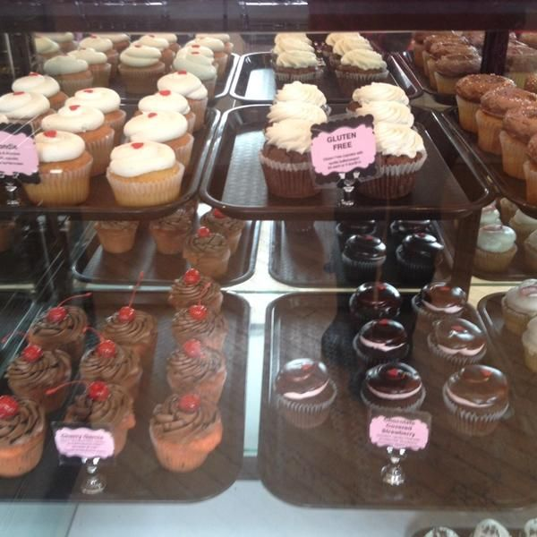

Pastelería Délice
Historia de nuestra Tradición
Nuestra gloriosa y más que golosa andadura se remonta a los inicios de 1894, cuando tres socios, Balaguer,Call y Ripall fundan Délice, originalmente situada en la calle Jacometreza desde, con el tiempo, se translada a donde ahora se encuentra, en plena PPuerta del Sol.
Tenemos productos sin gluten

Desde los inicios, esta casa ya marcaba maneras, y buenas formas. Empezando por los productos como la ensaimada, siempre acompañada de un chocolate calentito, embutidos de primera calidad, conservas, el famoso huevo hilado, la sobrasada mallorquina, sabarínas o babarruas, merlitones o bartalillos, torteles o rusos. Y vitrinas llenas de bombones que parecían pintados por algún pintor de palacio. Siguiendo con un gran personal cualificado, camareros de frac que atendían en francés y confiteros de primera división como Teodoro Bardají, que convirtió el obrador en el paraíso del azúcar.